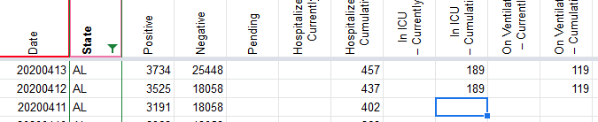

#1146: [AL] Patch 10/21/20 Cases (confirmed + probable ) and Deaths (confirmed + probable)
Issue number 1146
hmhoffman opened this issue on April 8, 2021, 3:36 PM PDT
State: AL
Dates affected: 10/21/20
Describe the issue: On October 21, 2020, Alabama updated their COVID-19 data dashboard after the time of our daily update due to technical issues. Later on October 21, 2020, they updated Cases (confirmed + probable ) and Deaths (confirmed + probable). We are patching these metrics from our automatic log of their dashboard metrics, see comment below for numbers.
Comments
Rows edited: 1 AL 2020-10-21 positive: 175674 (was 174528) death: 2828 (was 2805) lastUpdateTime: 2020-10-21 15:00:00+00:00 (was 2020-10-20 15:00:00+00:00)
#1146: [AL] Patch 10/21/20 Cases (confirmed + probable ) and Deaths (confirmed + probable)
Issue number 1146
hmhoffman opened this issue on April 8, 2021, 3:36 PM PDT
State: AL
Dates affected: 10/21/20
Describe the issue: On October 21, 2020, Alabama updated their COVID-19 data dashboard after the time of our daily update due to technical issues. Later on October 21, 2020, they updated Cases (confirmed + probable ) and Deaths (confirmed + probable). We are patching these metrics from our automatic log of their dashboard metrics, see comment below for numbers.
Comments
DATE AL FETCH_TIMESTAMP 1603320846 TIMESTAMP POSITIVE 175674 NEGATIVE TOTAL PENDING CURR_HOSP 863 HOSP 19330 CURR_ICU ICU 1967 CURR_VENT VENT 1121 DEATH 2828 DEATH_PROBABLE 172 DEATH_CONFIRMED 2633 RECOVERED 74439 PROBABLE 21512 DATE ANTIBODY_TOTAL ANTIBODY_POS ANTIBODY_NEG SPECIMENS 1273523 SPECIMENS_POS SPECIMENS_NEG CONFIRMED 153016 PCR_TEST_ENCOUNTERS ANTIBODY_TOTAL_PEOPLE 62008
Rows edited: 1 AL 2020-10-21 positive: 175674 (was 174528) death: 2828 (was 2805) lastUpdateTime: 2020-10-21 15:00:00+00:00 (was 2020-10-20 15:00:00+00:00)
#1076: [AL] Patch 10/26 Total antibody tests (people)
Issue number 1076
hmhoffman opened this issue on January 22, 2021, 7:33 AM PST
State: AL
Dates affected: 10/21/20
Describe the issue: On October 26, 2020, Alabama reported 80313 Total antibody tests (people), however on October 27, 2020, they tweeted a correction to that number. We are patching our Total antibody tests (people) for October 26, 2020 to 63,683 accordingly.
Links: https://twitter.com/ALPublicHealth/status/1321118002222419968
Comments
Rows edited: 1 AL 2020-10-26 totalTestsPeopleAntibody: 63683 (was 80313)
#1076: [AL] Patch 10/26 Total antibody tests (people)
Issue number 1076
hmhoffman opened this issue on January 22, 2021, 7:33 AM PST
State: AL
Dates affected: 10/21/20
Describe the issue: On October 26, 2020, Alabama reported 80313 Total antibody tests (people), however on October 27, 2020, they tweeted a correction to that number. We are patching our Total antibody tests (people) for October 26, 2020 to 63,683 accordingly.
Links: https://twitter.com/ALPublicHealth/status/1321118002222419968
Comments
Rows edited: 1 AL 2020-10-26 totalTestsPeopleAntibody: 63683 (was 80313)
#992: [AL] Move total specimens to total unique people
Issue number 992
karaschechtman opened this issue on December 2, 2020, 1:35 PM PST
Labels Data quality
State or US: AL
Describe the problem Alabama documents on its dashboard that the state's totals are unique people, but we had them stored in specimens because of (old) conflicting evidence received via outreach. We recently found social media posts from ADPH verifying that unique people was the correct interpretation. We are going to switch the state's timeseries to unique people. We will also switch totalTestResults to draw from unique people since it was previously drawing from specimens.
Link to data source https://twitter.com/ALPublicHealth/status/1300810345729142787 Our timeseries for specimens
Comments
#745: [AL] Backfill current hospitalization counts
Issue number 745
ladyzhetse opened this issue on August 10, 2020, 9:33 AM PDT
Labels Data quality
State or US: Alabama
Describe the problem Alabama updates its current hospitalization data retroactively. For example: our dataset lists 1575 current COVID-19 patients for 8/5, 8/6, 8/7, and 8/8, but in fact this was only the number on 8/5, according to the state's dashboard. Other previous dates have also been retroactively updated. We should double-check our current hosp time series against the AL dashboard for the time period since we last did a backfill for this state (7/22). I suggest having morning shifts or backfill shifts check on AL hosp data once a week going forward.
Link to data source https://alpublichealth.maps.arcgis.com/apps/opsdashboard/index.html#/6d2771faa9da4a2786a509d82c8cf0f7 Daily hospitalizations of confirmed cases chart on Tab 9

Comments
I've pulled in the state's official data as of this evening. Here's a chart showing the impact:
It's good to make sure we have the official data but until we automate this, I don't think we are able to do it once week.
Analysis spreadsheet, including before/after values: https://docs.google.com/spreadsheets/d/1zhMdtviXvMZiBImDqX5zsiWhBYWGld6PTvg1cMgKIXI/edit
#740: [AL] Probables Backfill
Issue number 740
the-daniel-lin opened this issue on August 6, 2020, 7:23 AM PDT
Labels Backfill
State or US: Alabama
Describe the problem We started reporting probable cases on 7/28. The states probables can be calculated from total cases - confirmed cases. We can backfill these values back to 5/31, when AL first reported probable cases (https://covid-tracking.slack.com/archives/CUQ4MMTPD/p1590948981250500).
Link to data source https://alpublichealth.maps.arcgis.com/apps/opsdashboard/index.html#/6d2771faa9da4a2786a509d82c8cf0f7
Comments
BEFORE:
AFTER:
#655: [AL] Better current hospitalization data is available
Issue number 655
MattHilliard opened this issue on July 22, 2020, 11:27 AM PDT
Labels Data quality
State or US: AL
Describe the problem Alabama updates their current hospitalization number throughout the day, including a few updates that actually come in the next day. The data entry shift gets most but not all of them, so our numbers for current hospitalization are a little low. Alabama also provides this data set going back much farther in time (3/24 vs. our 6/9).
Link to data source https://services7.arcgis.com/4RQmZZ0yaZkGR1zy/arcgis/rest/services/HospitalizedPatientTemporal_READ_ONLY/FeatureServer/1/query?where=1%3D1&orderbyfields=DateTxt+desc&outFields=%2A&resultRecordCount=1
Comments
This has been done on States Daily.
Analysis spreadsheet, including old and new values: https://docs.google.com/spreadsheets/d/1yFcbbCacCwVCh8wTod8gvFwmDtnNZ8Dk4qWVGYGjNgs/edit#gid=106790101
#650: [AL] Current Hospitalization data was updated after pub shift
Issue number 650
jaclyde opened this issue on July 19, 2020, 8:19 PM PDT
Labels Data quality
AL had only a partial update of 920 up during all of pub shift, it has since been updated to 1465.
https://alpublichealth.maps.arcgis.com/apps/opsdashboard/index.html#/6d2771faa9da4a2786a509d82c8cf0f7

Comments
The older values do not match our data but I'm going to leave that for another issue.
Before:
After:
#636: [AL] is reporting Specimens not Individuals
Issue number 636
amandafrench opened this issue on July 15, 2020, 12:56 PM PDT
Labels Backfill Data quality Historical Data Missing Data
State or US: [AL]
Describe the problem Per Outreach information, AL "Total Tested" is reporting in units of specimens not people. We have changed the capture field as of today (7/15) and need to backfill the series and put it into the correct column.
Related to #610
Link to data source

Comments
This issue has been automatically marked as stale because it has not had recent activity. It will be closed if no further activity occurs. Thank you for your contributions!
In States Daily, pre-7/15 test counts from Total PCR Tests (People) were copied over into Total Tests (PCR).
Before:
After:
#610: [AL] PCL Cases Historicals
Issue number 610
pscsharon opened this issue on July 13, 2020, 6:40 AM PDT
Labels Backfill Missing Data PCL/SVP Historicals
On Mar 20, AL began reporting in confirmed-cases. Historicals can be found in the archive of daily screenshots here: http://covid-tracking-project-data.s3-website.us-east-1.amazonaws.com/state_screenshots/AL/
Starting on May 31, AL began to report confirmed and probable cases.
Confirmed case counts can be included in Positive Cases (PCR) between Mar 20 and May 31 on States Daily.


Please backfill historical confirmed cases to Mar 20th, which is the earliest date when the state provides this number. Prior to Mar 20th, AL reported cases and it is unclear if the case count includes probable cases or not.
Comments
Values from C were transferred to V. This change acknowledges that AL's reporting of confirmed cases only on 5/30 and before and confirmed+probable beginning on 5/31. WS2 verified to have correct pop-ups.
Before:
 After:
After:
Double checked.
#348: AL numbers off
Issue number 348
rncem opened this issue on May 3, 2020, 11:17 AM PDT
All Alabama numbers off 5/1 and 5/2.
Comments
Hi @rncem Can you please provide more details on what is off?
Look at your screenshot times. You don’t have accurate numbers at accurate times.
#180: AL: ICU=177, ventilator=117, cume hospitalized=407 as of 4/10 4:08est
Issue number 180
catawbasam opened this issue on April 11, 2020, 1:09 PM PDT
see https://alpublichealth.maps.arcgis.com/apps/opsdashboard/index.html#/6d2771faa9da4a2786a509d82c8cf0f7 'CASE CHARACTERISTICS' tab
Comments
accidently closed while commenting
This issue has been automatically marked as stale because it has not had recent activity. It will be closed if no further activity occurs. Thank you for your contributions!
Thank you @catawbasam
We added this information into the data and you should see it reflected on the API this afternoon.
BEFORE
AFTER 
#84: QUALITY CONTROL LOGIC
Issue number 84
joshuaellinger opened this issue on March 30, 2020, 8:47 AM PDT
Labels Data quality
I am going to extract a spreadsheet that contains the currently implemented logic for y'all to review.
It will in Excel and checked into the repo as a living document.
DATE AL FETCH_TIMESTAMP 1603320846 TIMESTAMP POSITIVE 175674 NEGATIVE TOTAL PENDING CURR_HOSP 863 HOSP 19330 CURR_ICU ICU 1967 CURR_VENT VENT 1121 DEATH 2828 DEATH_PROBABLE 172 DEATH_CONFIRMED 2633 RECOVERED 74439 PROBABLE 21512 DATE ANTIBODY_TOTAL ANTIBODY_POS ANTIBODY_NEG SPECIMENS 1273523 SPECIMENS_POS SPECIMENS_NEG CONFIRMED 153016 PCR_TEST_ENCOUNTERS ANTIBODY_TOTAL_PEOPLE 62008